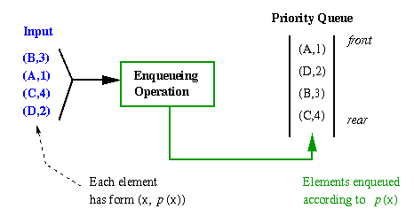
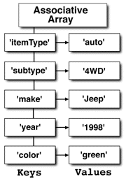
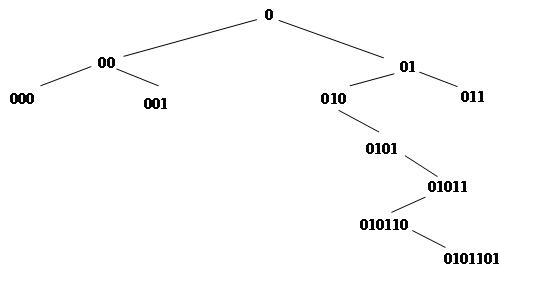
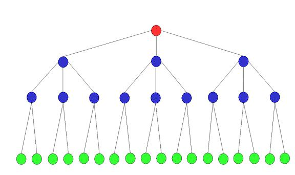
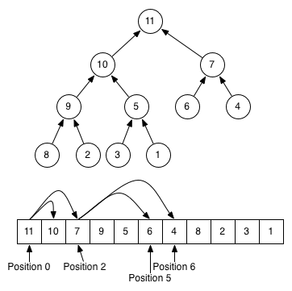
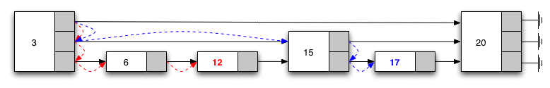
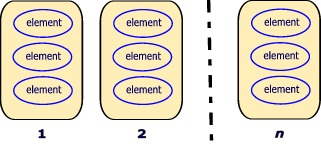

Edward Harned (eh at coopsoft dot
com)
Senior Developer, Cooperative Software Systems, Inc.
January, 2010
Queue
A queue is a list of elements waiting for retrieval by a thread. Queuing discipline is the rule that determines who goes next. FIFO, for "first-in-first-out," is the simplest queuing discipline. The most general queuing discipline is priority queuing in which each element has a priority and the element with the highest priority goes first, regardless of the order of arrival.
Figure 1: Priority Queue Structure

The three universal operations are:
- Add – add an element to the queue with an associated priority.
- Poll – remove the element from the queue that has the highest priority and return it.
- Peek – look at the element with highest priority without removing it.
High Performance
An High performance priority queues differ from standard priority queues in that operations on the queue must be fast and the duration of elements inside the queue is short. For example:
Standard — A queue of print requests does not need speedy operations and the elements remain in the queue until the prior request completely prints.High Performance — A queue of credit card verification requests needs paramount speed and the elements only remain in the queue for a millisecond or less.
Concurrency is usually a requirement in high performance priority queues since a thread pool is the fastest way to service the queue. That is, threads try to rip elements out of the queue as fast as the elements go in the queue.
Implementations
Associative
Array or Map
One method is to keep an associative array mapping each
priority to a list of elements with that priority. When using
association lists or hash tables to implement the associative
array, adding an element takes constant time but removing or
peeking at the element of highest priority takes linear time,
because we must search all keys for the largest one. Not the most
desirable feature for high performance.
Figure 3: Associative Array

Trees
The hard part of dealing with tree-like data structures is
retaining the various aspects that keep it tree-like rather than
degenerating into something abysmally slow such as a list.
Maintaining the balance seriously influences performance so this is
not a desirable feature for high performance.
Binary trees work well when inserting the elements in a random order. Inserting the elements in a sorted order produces a degenerate data structure that gives very poor performance.
Figure 4: Binary Tree

Balanced tree algorithms re-arrange the tree as they perform operations to maintain certain balance conditions and assure good performance; but maintaining the balance seriously influences performance so this is not a desirable feature for high performance.
Figure 5: Balanced Tree

Heaps
There are many types of priority queue heaps — Binary heap [1], Fibonacci heap [2], Binomial heap
[3], Relaxed heap[4], 2-3 heap
[5], Skew heap [6], Calendar
Queue [7], Lazy Queue [8], Ladder
Queue [9], Parallel Access Skew Heap [10] —
to name a few. Java
does not support cache-aware priority queues so we mention none
here.
The binary heap uses O(log n) time for Add and Poll operations, but allows Peeking in constant time. Binomial heaps add several more operations, but require O(log n) time for Peeking. Fibonacci heaps can Add elements, Peek at the maximum priority element, and decrease an element's priority in amortized constant time (deletions are still O(log n)).
Figure 6: Heap

Heaps do not need locking to rebalance the heap and Add operations on a heap can proceed from bottom to root, thus minimizing contention along their concurrent traversal paths. (See java.util.concurrent.PriorityBlockingQueue for a JDK version.)
Once again, maintaining the balance and dealing with elements with equal priority seriously influence performance making a heap undesirable for high performance.
Skip
List
A skip list is a heap data structure for storing a sorted list of
items using a hierarchy of linked lists that connect increasingly
sparse subsequences of the items. These auxiliary lists allow item
lookup with efficiency comparable to balanced binary search trees.
Skip lists use a random number generator to balance the list. Skip
lists have balance properties similar to that of search trees built
by random insertions, yet do not require random insertions. Thus,
the skip list is a prime candidate for high performance priority
queues. (See java.util.concurrent.ConcurrentSkipListMap for a JDK
version.)
However, priority depends on comparisons of the key element with other elements in the list, and, both maintaining the balance of the list and dealing with elements with equal priority may seriously degrade performance.
Figure 7: Skip List

There is a wide body of literature addressing the design of concurrent priority queue algorithms. They mostly work for “general" queues, ones that have an unlimited range of priorities
Problems
Just what are the biggest problems with lists, arrays, trees, heaps and skip lists when it comes to high performance?
- Sorting a
priority of unlimited range is the biggest headache. Priority can
be anything; names, dates, locations and may even be made up of
non-contiguous fields. A priority of unlimited range makes for a
headache of unlimited ache.
- Another major
problem is maintaining the order. Either you take a hit when adding
a new element into the structure or you have to search the
structure for the highest priority when polling. Neither of these
scenarios makes for high performance.
- For most structures, locking the queue for concurrent access is essential. A skip list can avoid locking but a skip list still requires sorting and sometimes extensive searching.
Headaches number one and two
What if we could come up with a priority queue that did not need sorting?
Let’s look at priority in detail. Remember, we’re talking about high performance priority queues where operations on the queue must be fast and the elements sit in the queue for a very short period.
Priority queues are like priority threads. Java threads support up to ten priorities, 1-10, with 1 being the highest. What that really means is a priority 1 may (depending on the thread/CPU mix) get execution time more often then a priority 10 and very little else. The difference between a priority 4 and 5 is negligible, not worth considering. The same standard holds true for high performance priority queues. It doesn’t matter if one element with a similar priority is fetched a microsecond before or after another. Therefore, a precise, unlimited range of priorities is of little importance for high performance priority queues.
If we could compress the fields that comprise the priority and limit the range of priorities, we could get a handle on our biggest headaches. Go back and take another look at Figure 1. The "Enqueueing Operation" is a unique algorithm for each queue.
For an application that sends out birthday cards, the exact day of the month is important and the ordering must include the month and day of birth. However, for similar applications we may be able to group elements by zodiac sign (astrology.) Here, the month and day can be converted into an integer from 1 to 12 for ordering.
Listing 1: zodiac configuration
priority = configure(int month, int day)
In this way, we can create twelve lists of waiting elements (Wait Lists.) Each list represents a priority (zodiac sign) and the elements within each list are in FIFO order. The lists are ordered, but we no longer have an unlimited range of priorities.
Figure 8: Wait Lists

Could we do this for a credit card verification application? Sure. We could have ten Wait Lists, just like Java threads. We want to group elements according to the resources it takes to process an element. Domestic verification takes fewer resources then foreign verification so domestic gets a higher priority then foreign. Cash advances are the most risky transactions and require more resources so these get a lower priority then merchant transactions. Jewelry stores are also risky transactions since jewelry can easily convert into cash so these get a lower priority then shoe stores. We can come up with a simple function:
Listing 2: verification configuration
priority = configure(int location, int type, int merchant, ...)
We take a small hit in processing time developing the priority but then we eliminate both the sorting and maintaining the order.
Each “priority” goes into its respective Wait List.
The elements are in FIFO order and never need rearranging.
Could we do this for other applications? Absolutely. We can hash a String into an integer and randomize that integer into any limited range. Any competent professional can develop an algorithm that returns an integer of limited range.
Now, our threads look for work starting at Wait List number one and proceed onto the next Wait List when the current Wait List is empty. We have a “priority queue” without the headaches of sorting and maintaining the order.
Headache number three
Locks are a killer to high performance. Dead/live locks, priority inversion, starvation, convoying and overhead are some of the problems of using locks. By having Wait Lists, we can store the elements of each Wait List in a standard Java non-locking queue based on the high performance Classes in the concurrency package:
java.util.concurrent.ConcurrentLinkedQueue (JDK1.5, 1.6)
java.util.concurrent.LinkedTransferQueue (JDK1.7).
Both these Classes
- Use fast atomic (java.util.concurrent.atomic package) methods for Add, Poll and Peek.
- Use linked nodes that the queue re-links after polling thereby averting all reordering. Simple and fast.
We’ve eliminated all our biggest headaches with simple Wait Lists.
Now it gets interesting.
Wait Lists
Wait Lists should be bounded.
|
When adding elements to an unbounded queue we run out of memory before we know there is a problem. A “no slot available [in any Wait List]” condition is a recoverable exception while an out of memory error usually kills all processing.
In a bounded environment, Wait Lists may support elements overflowing from one Wait List to the next as the best way not to reject a request. If it doesn't fit exactly where you want it and there is a place anywhere to put it, then put it there. It may not be exactly where you want it, but it's close. Since the request should only be in the queue a very short time period, it shouldn’t matter.
By having Wait Lists, we can easily support thresholds for controlling the number of threads executing at any given time.
Thresholds for the Thread Pool
When a thread can process an element in a short time period (what high performance is all about), then using more than the minimum number of threads for a lightly loaded queue is a waste of resources and may even slow down overall processing due to contention for memory, cycles and other assets.
Threads block (consuming minuscule resources) until there is work. With the standard priority queue and a thread pool of three (3) threads, when there are three or more elements in the queue, then all three threads are working. There is no way to control the number of threads working when there is more than one element in the queue.
|
The “use all available threads” paradigm may easily degrade the entire computer when those threads are working on similar tasks. Severe contention is often a major problem with dynamic decomposition methods.
Thresholds solve the problem.
A threshold is simply a boundary after which an event should take place. For the threads in a pool of threads, when adding a new element to the queue results in more then a “threshold” number of waiting elements, then engage a new thread to handle the load.
A Threshold could be:
- a percentage of total elements in all Wait Lists,
- the single percentage of elements waiting in the Wait List into which the last element went,
- the single percentage of elements waiting in the Wait List into which the last element went using a weighted factor (i.e. a priority 1 may be more significant than a priority 3),
- a percentage of elements in currently busy Wait Lists that also considers the active thread count,
- or any other configuration necessary for your processing.
In the above example, we have a thread pool of three threads. Assume one active thread, ten (10) elements maximum in each bounded Wait List and a Single Wait List Threshold of 30%. When we add the third element to Wait List 1, we haven’t exceeded the 30% threshold so we would not engage a new thread. When the next element comes in pushing the number of waiting elements in Wait List 1 past 30%, then we engage a new thread to reduce the load on the queue.
In this manner you manage the threading, rather then the threading occurring by chance. The way you set up these thresholds is only limited by imagination. You might have two numbers associated with your Wait Lists:
- The number of physical elements in Wait Lists (bounded, but high)
- The number of logical elements in Wait Lists (used for threshold processing). Think of logical as the normal top load on a Queue.
For example: A single Wait List should not have more then twenty (20) pending elements at any time. Make the logical size 20 and to be extra, extra safe, make the physical size 60. Now you can drive percentages using the number twenty (20) knowing that an overflow is very unlikely.
Your high performance priority queue is on the road to total tune-ability.
Simple
Sooner or later every software developer learns about KISS. That is, if you don't Keep It Simple, you're Stupid. Heaps, skip lists etc. are incredibly complex structures especially when trying to handle duplicate entries (that priority of unlimited range problem again.) Whenever possible, competent software developers utilize the language's basic templates and simply build extensions thereon.
We can keep the Wait Lists in a simple ArrayList. Adding an element is as simple as the add() method in the appropriate java.util.concurrent Queue. Polling and Peeking are simple searches for the first non-null element in the Queue.
Listing 3: searching Wait Lists
| private ArrayList<WaitList> details;
protected Request getFirstBusy () { for (WaitList WL
: details) { // look in each
wait list for the first used |
Simple is fast. Simple is easy. Simple is good.
Statistics
The statistics possible with Wait Lists serviced by a thread pool are:
- How many times were threads instantiated?
- How many requests did each thread process?
- How many times was a thread notified?
- How many waits [for work] expired?
- How many problems were caught?
- How many times was expunging necessary?
- How did the thread thresholds perform?
- How many requests were processed for each priority?
- What was the high-water mark for each priority?
- How many times was there an overflow in a Wait List?
- How many times was a request removed before processing?
Professionals accumulate statistics. Since we’ve broken the priority queue of unlimited range into separate Wait Lists, we can easily accumulate statistics on every event in the structure. Statistics are the basis for performance analysis and management.
Management
Now that you have statistical details on the Wait Lists, you can develop GUI and non-GUI interfaces so users may view:
- The maximum number of requests pending at any one time. (High water mark.)
- The number of requests processed for each Wait List.
- The number of currently active entries in each Wait List.
- The number of requests that failed and were backed out.
- The number of overflows from one Wait List to another.
- The number of times no slots were available in any Wait List.
And you may dynamically alter parameters:
- Change the physical bounds limit for Wait Lists.
- Change the logical bounds limit for Wait Lists.
- Change the threshold values.
Naturally, you may also develop on-request and shutdown statistics printing classes.
Building such a structure could take years
Yes, and it did.
Happily, there are general-purpose, high performance priority queues using Wait Lists, totally controlled threads (see Managing Threads in Java SE) and full documentation in open-source products for Java SE, Java ME and Android available today.
| Tymeac™ for the Java Standard Edition, Micro Edition and Android are Open Source Software products maintained on SourceForge.net and you can download the latest editions there. |
Tymeac™ supports both high performance requirements as well as standard queue needs when developers want total control over their environment.
Conclusion
To perform at top speed, high performance priority queues must break the sorted, unlimited-range-of-priorities mold.
Using Wait Lists not only breaks that pattern, it opens the door to unparalleled performance and management for any application.
References
Download the latest SE edition of Tymeac here. With all the documentation, scripts, classes and source.
Download the latest ME edition of Tymeac here. With all the documentation, scripts, classes and source.
Download the latest AND edition of Tymeac here. With all the documentation, activities and service.
Managing Threads in Java SE (the thread pool controlling article)
Managing Threads in Android (the Android thread management article)
Fork-Join Development in Java SE (the multi-core development article)
[1] Binary heap — http://en.wikipedia.org/wiki/Binary_heap
[2] Fibonacci heap — http://en.wikipedia.org/wiki/Fibonacci_heap
[3] Binomial heap — http://en.wikipedia.org/wiki/Binomial_heap
[4] Relaxed Fibonacci heaps — http://portal.acm.org/citation.cfm?id=50096
[5] 2-3 heap — http://en.wikipedia.org/wiki/2-3_heap
[6] Skew heap — http://en.wikipedia.org/wiki/Skew_heap
[7] Calendar queue — http://xlinux.nist.gov/dads/HTML/calendarQueue.html
[8] Lazy queue — http://portal.acm.org/citation.cfm?id=306860
[9] Ladder queue — http://portal.acm.org/citation.cfm?id=1103324&dl=GUIDE&coll=GUIDE&CFID=64044102&CFTOKEN=68722971
[10] Parallel Access Skew Heap — http://portal.acm.org/citation.cfm?id=275368&dl=GUIDE&coll=GUIDE&CFID=63991224&CFTOKEN=64733375
About the Author
Edward Harned is a software developer with over thirty years industry experience. He first led projects as an employee in major industries and then worked as an independent consultant. Today, Ed is a senior developer at Cooperative Software Systems, Inc., where, for the last twelve years, he has used Java programming to bring multi-threading solutions to a wide range of tasks.